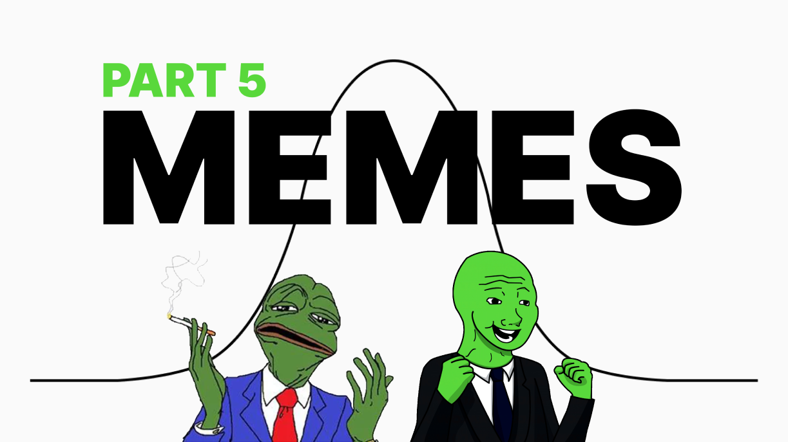
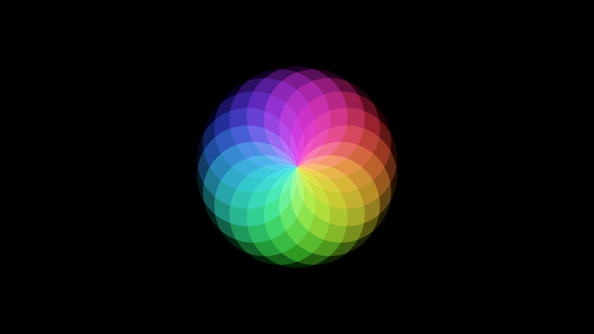
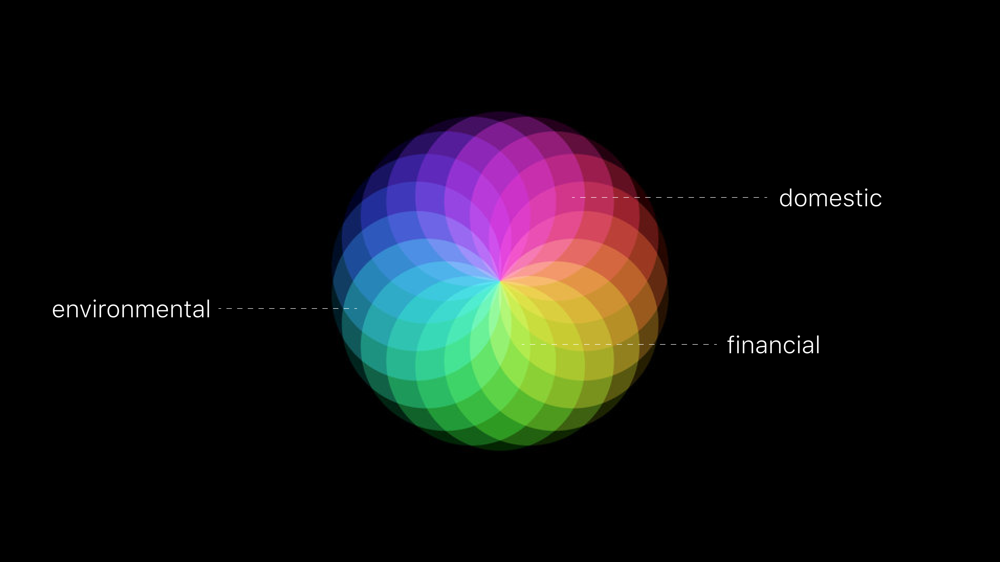

Looking at the universality of memetic construction
Parts 1-4:
A Non-Technical & Highly Speculative Look at Memes: Part 1
A Non-Technical & Highly Speculative Look at Memes: Part 2
A Non-Technical & Highly Speculative Look at Memes: Part 3
A Non-Technical & Highly Speculative Look at Memes: Part 4
The Spectrum
If you are fully caught up, then we have entered the phase where it becomes quite divergent. There are endless ways to navigate memes once we understand what they are, how they work, and where their design principles are most flexible.
We now focus on the spectrum.
If you are still thinking of memes only within the range of image-comedy, then please review the previous essays. Memes are thoughts essentially. They are concepts, designs, and information transfer vehicles.
It is a language of communicating things resonant with our own mind and spirit. It is the over arching concept that word-language, aesthetics, and symbols fall under. We are discussing a multi dimensional scaffold from which we can turn intentions into reality.
Creation from Imagination
Within your mind are many ideas and beliefs. At the collective level there are many shared ideas and beliefs. The overlapping bits between one and many are where memes thrive.
For a moment think of memes in a primal sense. The same way humans mesh to procreate, one could argue this dynamic is even more prevalent in the platonic sphere. We mesh minds and create reality. As Picasso said, “anything you can imagine is real.”
Widening our scope so that we can eventually narrow it, you must understand how miraculous the dynamic of creation is. You have an idea, for this example let’s say it is to get a six pack of abs. You then start to orient your life toward this idea. You:
- begin eating better
- begin strength & cardio training
- supplementation, etc
Some months later you wake up one day and have your ‘aha’ moment. Sure it was not instantaneous, but you must not disrespect the miracle of this process.
You had an idea about how you would like your physical body to look in reality. Through time and an update of your behaviors and focus, it came to manifest. This is the creative process. A process by which any capable human being can influence infinity to match the concepts, ideas, and beliefs they held internally first.
Collective Creation
When scaling this to the collective level we now deal with new dynamics.
The individual must deal with their own frameworks and biases while simultaneously dealing with others. How would get a group of friends to try and get six pack abs together as opposed to just yourself?
Memes are the key here.
Creative Frameworks
Memes are frameworks within the context of reality creation. If you and a group of friends had this goal you would need common words, images, inspirations, perspectives, and backstops. This creative task is multiples more challenging to manifest.
As someone who has tried to accomplish this goal before, here are some of the methods we employed.
- agreed upon program & duration of creation - 90 days & P90x
- agreed upon creation time - 3pm each working day
We failed to create this new reality however, and looking back I now know why. We did the bare minimum when it came to building a memetic framework.
If I were to try again with the same group here’s what I would do differently.
- Photos or people of interest that we wished to model ourselves after
- Phrases and slogans that captured the intent of the group
- Group chat to communicate regularly with a brand name for us to galvanize under
- Repetitive communication, reflection, & sharing of the common motifs, narratives, and imagery
Those 4 changes are the framework that build on the previous 2 fundamentals. It is important to remember that if the manifestation goal is not of interest then all of those memes seem irrelevant, and rightly so. The example above is intended to illustrate how memes extend into reality, not which memes matter most.
This is where we start to circle back to the idea of the spectrum.
Inherent Meme Diversity
Social media has done wonders at proving the diversity of interests humans have. There are fitness enthusiasts, environmental enthusiasts, ai enthusiasts, crypto, space, dentistry, culinary, and on and on and on the list goes.
Within each of those niche interests are individual ranges as well. In the crypto space, for example, we have those interested in decentralized finance, or interested in non fungible tokens, or just interested in how the chain stores data. This whole mental image I’m painting is what I call ‘the spectrum’.
The base idea is that if each individual could hone in on the thing(s) most resonant with their lives, and could design memes that communicate what they learn, we could accelerate the growth of our respective communities & overlapping societies.
In an increasingly digital and global world, it becomes apparent why this is significant. Decentralized growth and meme development are a means to a colorful world. This truth is at the heart of my series.
For me, the part of the spectrum that I’m coloring in, is getting creatives up to speed on what memes are and how to produce at new levels that end up leveraging blockchain tech.
We will start diving into that next.